WatchGuard provides integration instructions to help our customers configure WatchGuard products to work with products created by other organizations. If you need more information or technical support about how to configure a third-party product, go to the documentation and support resources for that product.
SolarWinds NetFlow Traffic Analyzer (NTA) collects flow data, processes it, and together with performance data collected by SolarWinds Network Performance Monitor (NPM), presents this data in graphs and reports to show which part of your network drives bandwidth utilization. SolarWinds NPM and SolarWinds NTA are built on the Orion® Platform, which offers you the ability to extend your monitoring in a fully integrated platform with shared alerting and reporting as well as a customizable web console.
This document describes how to use SolarWinds to discover and monitor the WatchGuard Firebox and analyze device bandwidth usage.
Contents
Integration Summary
The hardware and software used to complete the steps outlined in this document include:
- SolarWinds
- SolarWinds NTA 2024.2.1
- SolarWinds NPM 2024.2.1
- WatchGuard Firebox
- Fireware v12.10.4 or higher
Topology
This diagram shows a typical NetFlow topology.

Before You Begin
Make sure all your SolarWinds NTA services are running and your Firebox has Fireware v12.10.4 or higher.
Configure Your Firebox for SolarWinds NTA
To enable your Firebox to integrate with SolarWinds NTA, you must configure the Firebox as a NetFlow exporter, configure SNMP settings, and add a policy to allow SNMP traffic. SolarWinds NTA uses the SNMP protocol to discover devices.
To configure your Firebox as a NetFlow exporter, from Fireware Web UI:
- Select System > NetFlow.
- Select Enable NetFlow.
- For the Protocol Version, select V9.
- In the Collector Address text box, type the IP address of the NetFlow collector.
- In the Port text box, type 2055.
2055 is the port number used by SolarWinds NTA. - In the Active Flow Timeout text box, type 20.
The Active Flow Timeout setting segments your flow into small flows based on the value you specify. We recommend that you specify an Active Flow Timeout value that is lower than the Active Flow Timeout value on the collector. This helps to avoid data loss. If the Active Flow Timeout value is lower on the collector, the collector might stop listening while the Firebox is sending data. - Keep the Sampling Mode disabled.
- (Optional) To monitor Firebox traffic, select the Monitor Traffic Generated by the Firebox or Monitor Traffic Destined for the Firebox check box, or select both.
- To enable NetFlow for an interface, next to the interface name, select the Ingressor Egress check box, or select both.
If you have many interfaces, use the Interface Name search box or select an option from the Type or Zone drop-down lists to find an interface quickly.
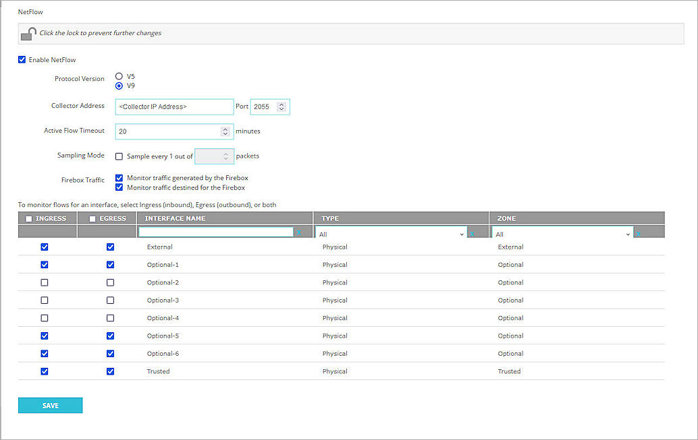
- Select Save.
For more information about NetFlow on the Firebox, go to About NetFlow and Configure NetFlow in Fireware Help.
To configure SNMP settings, from Fireware Web UI:
- Select System > SNMP.
- From the Version drop-down list, select v3.
- In the User Name text box, type a user name the SNMP server uses when it contacts the device. In this example, we type snmpv3.
- From the Authentication Protocol drop-down list, select SHA1.
- In the adjacent Password and Confirm text boxes, type the authentication password.
- From the Privacy Protocol drop-down list, select DES.
- In the adjacent Password and Confirm text boxes, type the encryption password.
- To enable NAT for all SNMP connections through your Firebox, select the Use NAT for Connections through the SNMP Application Layer Gateway check box.
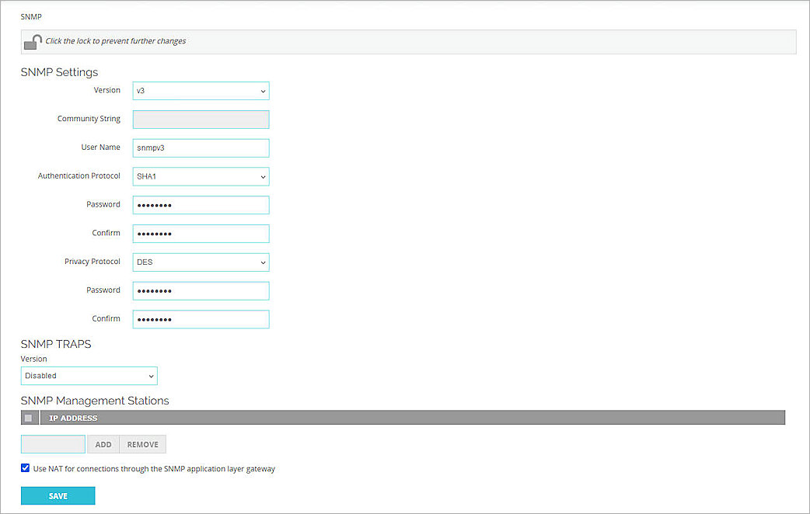
- Click Save.
To enable your Firebox to receive SNMP polls, you must also add an SNMP packet filter policy. To add an SNMP policy, from Fireware Web UI:
- Select Firewall > Firewall Policies.
- Click Add Policy.
- From the Packet Filter drop-down list, select SNMP.
- Click Add Policy.
- In the From section, click Add.
The Add Member dialog box opens. - From the Member Type drop-down list, select Host IPv4.
- In the Member Type text box, type the IP address of your SolarWinds NTA SNMP server.
- Click OK.
The IP address of the SNMP server appears in the From list. - In the From list, remove the Any-Trusted item.
- In the To section, click Add.
The Add Member dialog box opens. - From the Member Type drop-down list, select Alias.
- From the list, select Firebox.
- Click OK.
Firebox appears in the To list. - In the To list, remove the Any-External item.
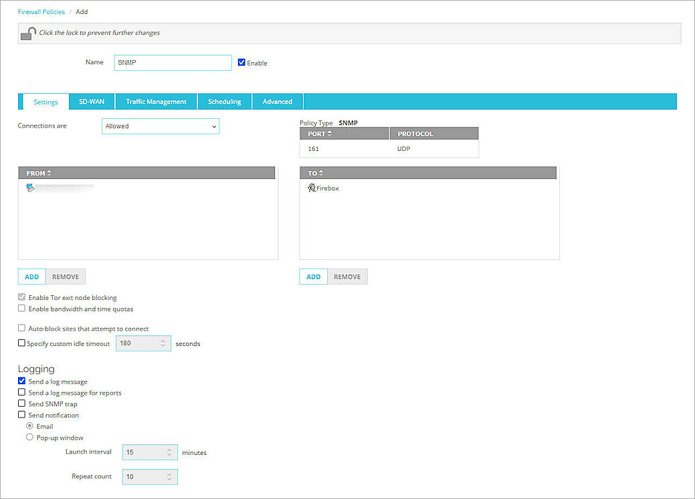
- Click Save.
Configure Your SolarWinds NTA
Add an SNMPv3 Credential
SNMPv3 is a secure version of the SNMP protocol that adds authentication and encryption. SNMPv3 credentials are used in the Discovery Wizard.
To add an SNMPv3 credential:
- Log in to the SolarWinds Platform Web Console with your administrator account.
- Select Settings > All Settings.
- In the Credentials section, click Manage SNMPv3 Credentials.
- Click Add SNMPv3 Credential.
The Enter SNMPv3 Credential page opens. - In the Credential Name text box, type a credential name. In this example, we type snmpv3.
- In the User Name text box, type the user name that matches the user name configured in Configure Your Firebox for SolarWinds NTA.
- Leave the SNMPv3 Context text box blank.
- From the Authentication Method drop-down list, select SHA1.
- In the adjacent Password text box, type the authentication password.
- From the Privacy / Encryption Method drop-down list, select DES56.
- In the adjacent Password text box, type the encryption password.
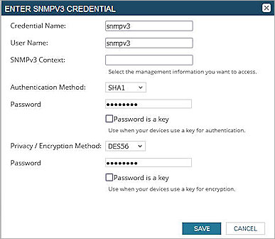
- Click Save.
Configure Network Discovery in SolarWinds
After you add the snmpv3 credentials for the SolarWinds Platform, you must configure Network Discovery in SolarWinds.
To configure Network Discovery:
- Log in to the SolarWinds Platform Web Console with your administrator account.
- Select Settings > Network Discovery.
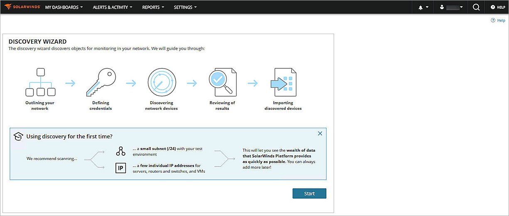
- Click Start.
- In the IP Addresses text box, type the IP address of the Firebox.
You can also use other options to add the Firebox. For more information, go to Discover Your Network for the SolarWinds Platform with the Discovery Wizard in the SolarWinds Platform documentation.
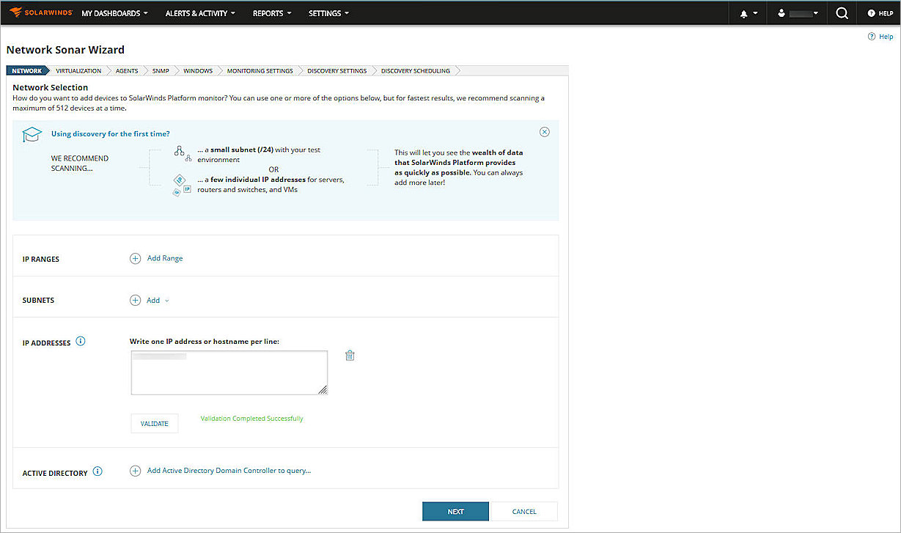
- Click Next until the SNMP Credentials page opens.
- To make the discovery faster, click next to the SNMPv3 credential until the credential is at the top of the list.
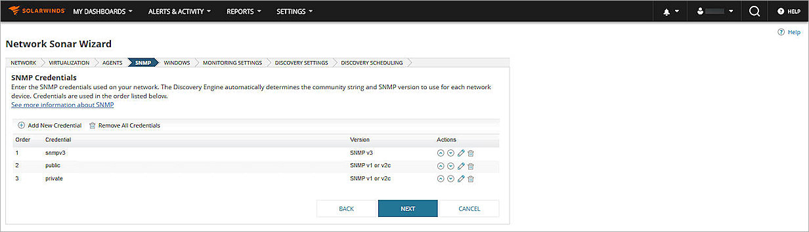
- Click Next until the Discovery Scheduling page opens.
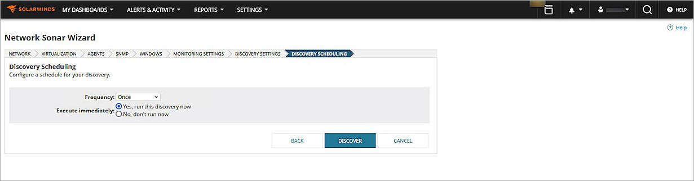
- Click Discover.
The discovery process starts, and the results wizard opens.
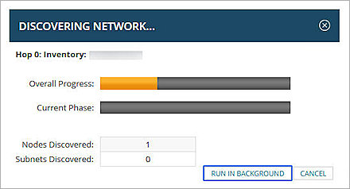
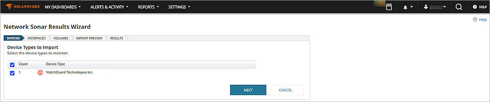
- Click Next.
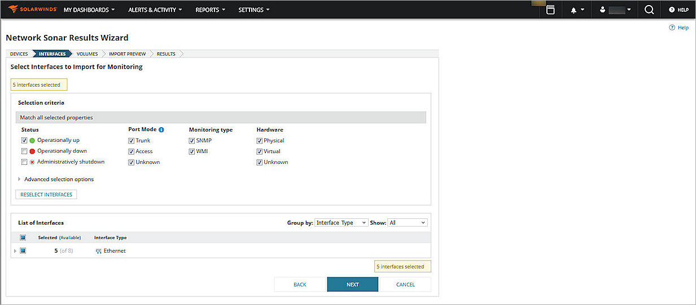
- Click Next.
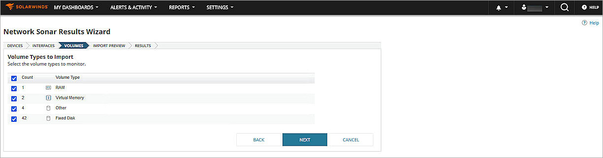
- Make sure the volume types you want to monitor are selected, and click Next.
- Click Import.
- Click Finish.
The devices are imported. - Select Settings > Manage Nodes.
- From the Group by drop-down list, select Vendor, and click WatchGuard Technologies Inc.
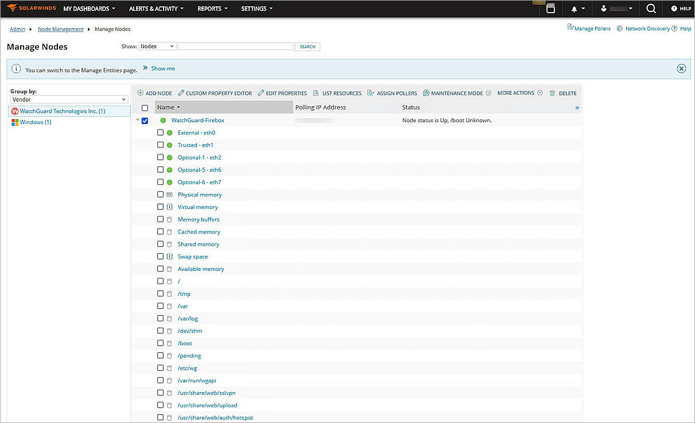
- Select the WatchGuard Firebox node, and click List Resources.
- For Status & Response Time, select SNMP.
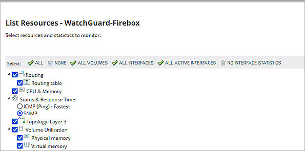
- Click Submit.
Test the Integration
To test the integration, in the SolarWinds Platform Web Console:
- Select Settings > Manage Nodes.
- From the Group by drop-down list, select Vendor, and click WatchGuard Technologies Inc.
- Click the WatchGuard Firebox node name.
The Node Details page opens. - From the navigation menu, select Vital Stats.
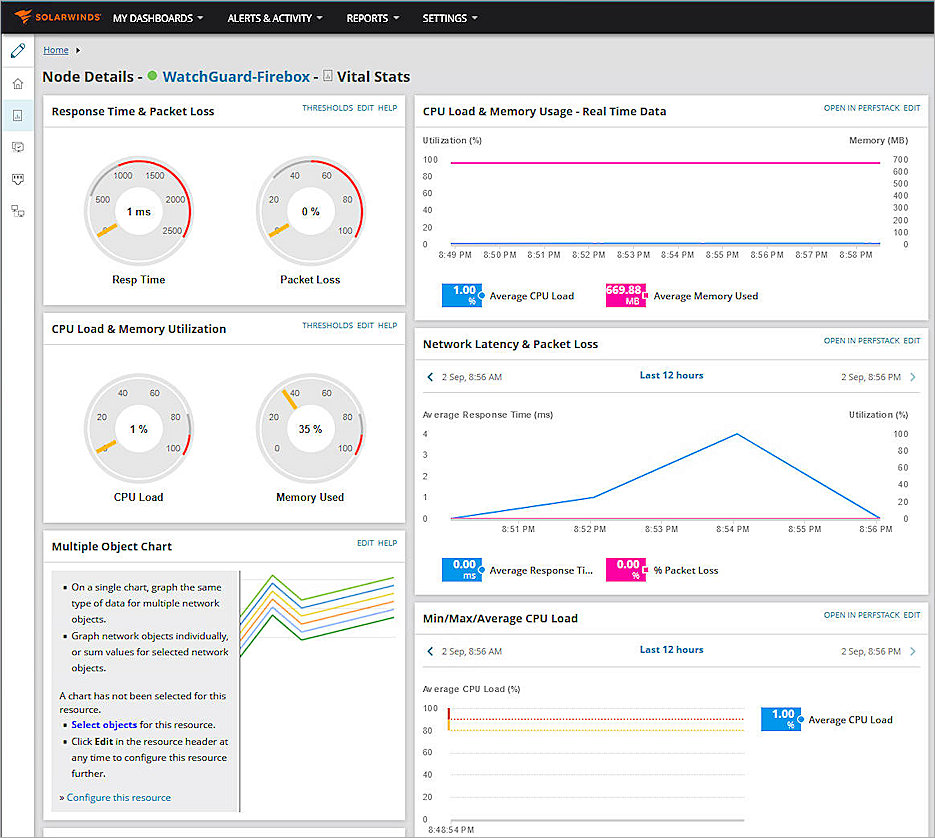
To view the Netflow Traffic Analyzer Summary, in the SolarWinds Platform Web Console:
Select My Dashboards > NetFlow > NetFlow > NTA Summary.
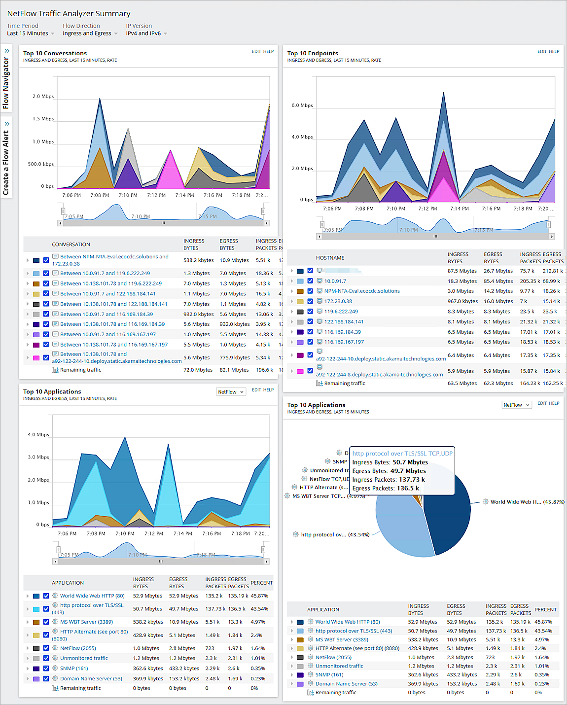
To view the NetFlow Countries Summary, in the SolarWinds Platform Web Console:
Select My Dashboards > NetFlow > NetFlow > Countries.
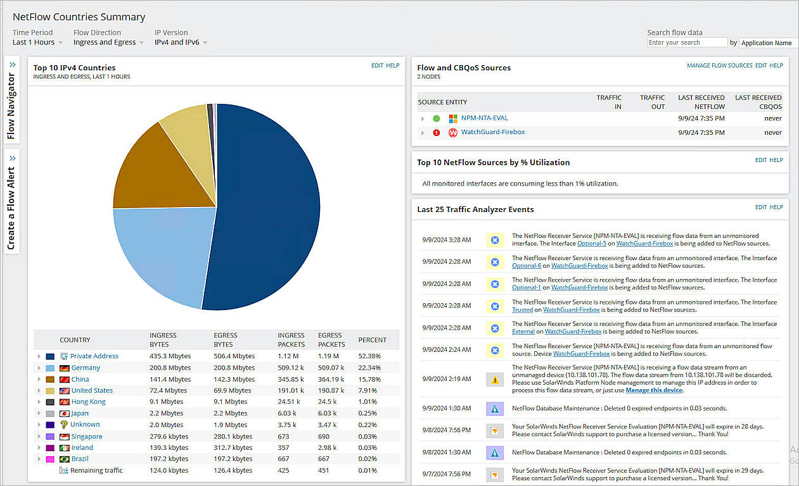